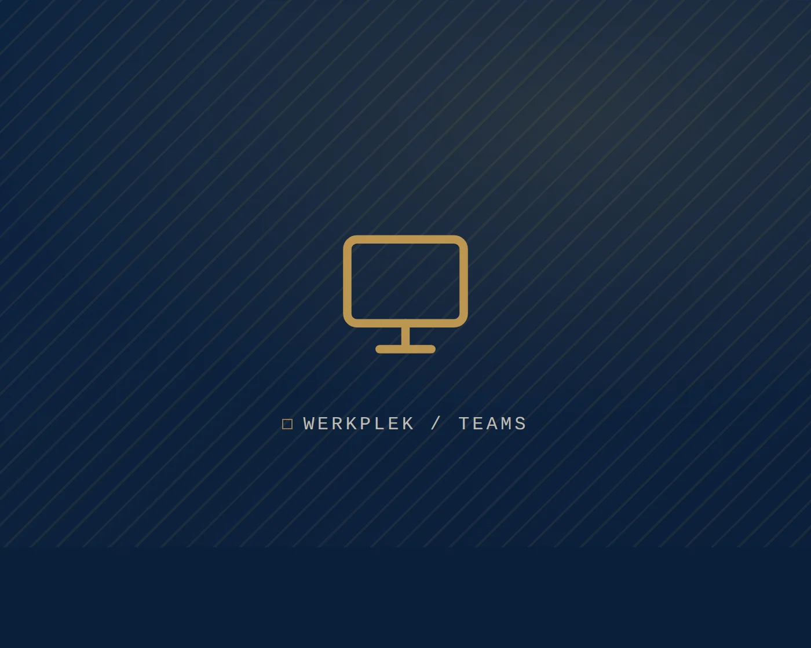

DocumentautomatiseringVrijdagmiddag, half vier. Een medewerker zit met een koopovereenkomst, een kadastraal uittreksel en twee kopieën van paspoorten naast elkaar. Naam, geboortedatum, perceelnummer, koopsom: alles gaat met de hand het intakescherm in. Het is de derde levering deze week. En bij elk getal dat ze overtypt, kan het misgaan.
Het notariaat draait op documenten: aktes, volmachten, dossiers en correspondentie. AI-documentautomatisering in het notariaat kan dat werk sneller en consistenter maken, met minder handmatig overtypen. In dit artikel leest u wat documentautomatisering inhoudt, wat AI eraan toevoegt en hoe u de nauwkeurigheid en veiligheid bewaakt.
Sjablonen kennen we al. Wat voegt AI daaraan toe?
Klassieke documentautomatisering werkt met sjablonen en clausulebibliotheken. U vult gegevens in een formulier of intakescherm in en het systeem maakt een document met de juiste tekstblokken. Dat is betrouwbaar en voorspelbaar, en het vormt al jaren de basis van veel notariële software. Toch blijft er veel handwerk over. Gegevens invoeren, modellen onderhouden en afwijkende informatie verwerken: dat moet nog steeds met de hand.
AI voegt daar een laag aan toe. Een taalmodel kan gegevens uit aangeleverde stukken halen, conceptteksten voorstellen, documenten controleren op volledigheid en tegenstrijdigheden signaleren. Een sjabloon is star. AI kan omgaan met een uittreksel dat net anders is opgemaakt, of een e-mail waarin de gegevens verspreid staan. AI vervangt uw bestaande systeem dus niet. Het neemt het handwerk eromheen weg, als het goed is ingericht en gecontroleerd.
Vijf toepassingen van AI-documentautomatisering in het notariaat
- Conceptaktes en documenten: opstellen op basis van intakegegevens en vaste modellen.
- Gegevens overnemen: gegevens uit aangeleverde stukken halen, zodat niemand ze hoeft over te typen.
- Dossiercontrole: nagaan of een dossier volledig en consistent is voordat het verder gaat.
- Dossieropbouw: stukken herkennen, een naam geven en op de juiste plek opslaan.
- Correspondentie en samenvattingen: voor cliënten en andere betrokken partijen.
De jurist blijft. Het voorbereidende werk gaat sneller, zodat er meer tijd overblijft voor advies en controle. Neem het overtypen van gegevens: foutgevoelig, saai en tijdrovend. Daar is AI sterk in. De medewerker controleert het resultaat in plaats van het zelf in te kloppen. Controleren gaat sneller dan overtypen, en de aandacht gaat naar de inhoud.
Voorbeeld: de leveringsakte
Bij de voorbereiding van een leveringsakte komen gegevens uit verschillende bronnen samen: de koopovereenkomst, kadastrale informatie, identiteitsgegevens. AI kan die gegevens verzamelen, in een conceptopzet zetten en aangeven waar iets ontbreekt of niet klopt. De jurist begint dan niet bij een leeg document, maar bij een ingevuld concept met duidelijke aandachtspunten.
Elke tekst van AI is een concept
Bij documentautomatisering met AI draait alles om nauwkeurigheid. AI kan fouten maken, en in het notariaat is daar weinig ruimte voor. Een verkeerd overgenomen naam, bedrag of perceelnummer kan grote gevolgen hebben. Daarom geldt zonder uitzondering: elke tekst die AI maakt, is een concept dat een medewerker controleert en goedkeurt. Het werk verschuift van maken naar controleren. Het denken blijft bij de mens.
- Werk vanuit de bron: laat de AI aangeven uit welk aangeleverd stuk een gegeven komt. Controleren is dan een kwestie van naast elkaar leggen, niet van opnieuw uitzoeken.
- Leg vast wie wat heeft goedgekeurd: zo ontstaat een controleerbaar spoor (audit trail). Handig voor de interne kwaliteitsbewaking en voor de verantwoording achteraf.
Zonder koppeling gaat u weer knippen en plakken
Documentautomatisering levert pas wat op als het aansluit op de systemen waarin u al werkt: uw dossier- en relatiebeheersoftware en uw werkplek. Staat een AI-tool los van uw dossiersysteem, dan gaan medewerkers weer knippen en plakken. Precies de handmatige stappen die u wilde schrappen, met een extra risico op een datalek erbij.
Koppel de AI veilig aan uw dossiersoftware, met opslag en samenwerking in Microsoft 365 (SharePoint en Teams), duidelijke toegangsrechten en versiebeheer. Documenten ontstaan en blijven dan binnen uw beheerde, beveiligde omgeving. U werkt sneller, en de gegevens raken niet via een omweg buiten uw controle.
Kiest u een tool? Kijk dan niet alleen naar wat de AI kan. Stel ook deze vragen:
- Waar worden de gegevens verwerkt en opgeslagen?
- Koppelt het systeem met uw bestaande software?
- Past het binnen het beheer en de beveiliging van uw werkplek?
Zo helpt Legal IT: we richten de IT-omgeving rond documentautomatisering veilig in en koppelen die aan uw bestaande systemen.
Wat het oplevert en hoe u begint
De winst is zelden één groot getal. Het is een optelsom: minder overtypen, minder zoeken, minder invoerfouten en een kortere doorlooptijd per dossier. Medewerkers besteden hun tijd aan controle en advies in plaats van aan tikwerk. Dat maakt het werk ook prettiger. Verwerkt uw kantoor veel dossiers met een krappe bezetting, dan kan dat het verschil zijn tussen achterstand en grip.
Begin klein. Kies één documenttype of één handeling die nu veel tijd kost. Richt daar veilige AI-ondersteuning voor in en meet wat het oplevert in tijd en kwaliteit. Werkt het, dan breidt u stap voor stap uit naar andere documenttypen. Zo groeien vertrouwen en routine, zonder dat u uw hele werkwijze in één keer omgooit.
Terug naar vrijdagmiddag. De gegevens uit de koopovereenkomst, het uittreksel en de paspoorten staan al in het concept, met bij elk gegeven de bron erbij. De medewerker loopt ze na en ziet dat één huisnummer niet overeenkomt. Dat zoekt ze uit. De rest klopt.
Bij welk document wilt u tijd winnen?
Vertel ons welk proces nu de meeste tijd kost. Dan kijken we samen wat er kan.
Plan een gesprek →